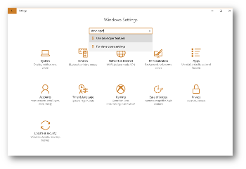
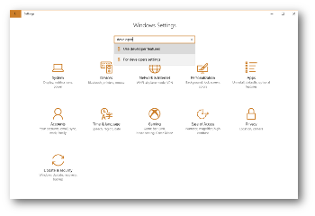
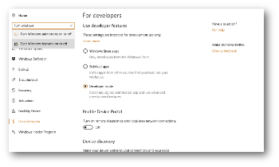
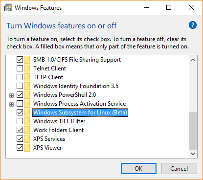
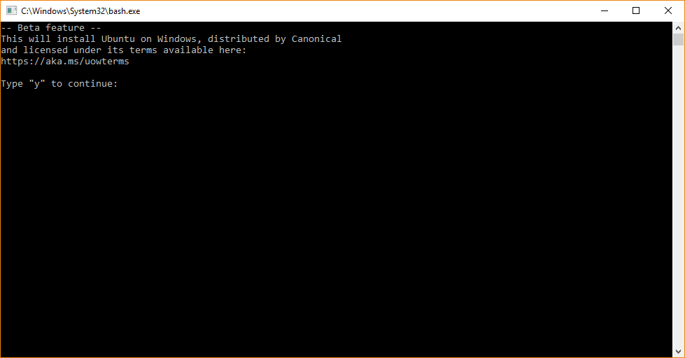
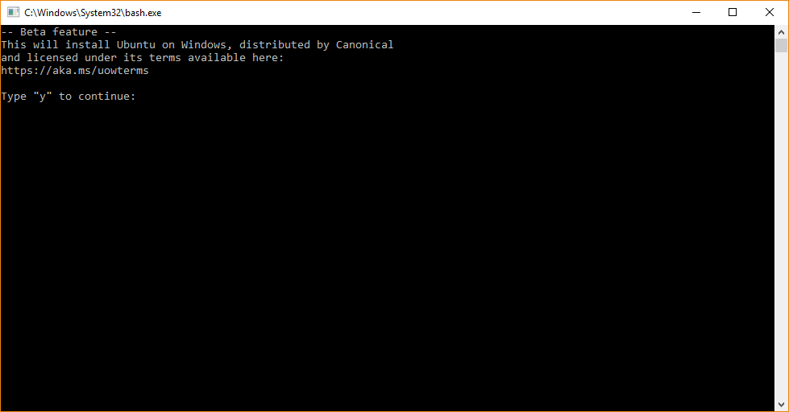
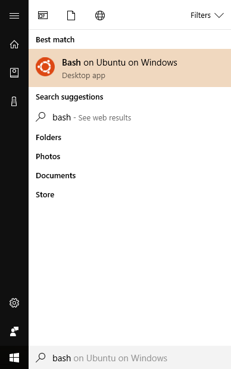

Using LAMMPS with Bash on Windows
written by Richard Berger
Starting with Windows 10 you can install Linux tools directly in Windows. This allows you to compile LAMMPS following the same procedure as on a real Ubuntu Linux installation. Software can be easily installed using the package manager via apt-get and all files are accessible in both the Windows Explorer and your Linux shell (bash). This avoids switching to a different operating system or installing a virtual machine. Everything runs on Windows.
Installing Bash on Windows
Prerequisites
- Windows 10 (64bit only)
- Latest updates installed
Enable developer mode
You enable this feature by first opening Windows Settings and enabling Developer mode. Go to the Windows settings and search for “developer”. This will allow you to install software which comes from outside of the Windows Store. You might be prompted to reboot your compute. Please do so.
 

{kind=link}

Install Windows Subsystem for Linux
Next you must ensure that the Window Subsystem for Linux is installed. Again, search for “enable windows features” in the Settings dialog. This opens a dialog with a list of features you can install. Add a checkmark to Windows Subsystem for Linux (Beta) and press OK.
 {kind=link}
{kind=link}
Install Bash for Windows
After installation completes, type “bash” in the Windows Start menu search. Select the first found option. This will launch a command-line window which will prompt you about installing Ubuntu on Windows. Confirm with “y” and press enter. This will then download Ubuntu for Windows.
 

During installation, you will be asked for a new password. This will be used for installing new software and running commands with sudo.

Type exit to close the command-line window.
Go to the Start menu and type “bash” again. This time you will see a “Bash on Ubuntu on Windows” Icon. Start this program.
Congratulations, you have installed Bash on Ubuntu on Windows.

Compiling LAMMPS in Bash on Windows
The installation of LAMMPS in this environment is identical to working inside of a real Ubuntu Linux installation. At the time writing, it uses Ubuntu 16.04.
Installing prerequisite packages
First upgrade all existing packages using
sudo apt update
sudo apt upgrade -y
Next install the following packages, which include compilers and libraries needed for various LAMMPS features:
sudo apt install -y build-essential ccache gfortran openmpi-bin libopenmpi-dev libfftw3-dev libjpeg-dev libpng12-dev python-dev python-virtualenv libblas-dev liblapack-dev libhdf5-serial-dev hdf5-tools
Files in Ubuntu on Windows
When you launch “Bash on Ubuntu on Windows” you will start out in your Linux user home directory /home/username. You can access your Windows user directory using the /mnt/c/Users/username folder.
Download LAMMPS
Obtain a copy of the LAMMPS code and go into it using “cd”
Option 1: Downloading LAMMPS tarball using wget
wget http://lammps.sandia.gov/tars/lammps-stable.tar.gz
tar xvzf lammps-stable.tar.gz
cd lammps-31Mar17
Option 2: Obtaining LAMMPS code from GitHub
git clone https://github.com/lammps/lammps.git
cd lammps
Compiling LAMMPS
At this point you can compile LAMMPS like on Ubuntu Linux.
Compiling serial version
cd src/
make -j 4 serial
This will create an executable called lmp_serial in the src/ directory
Compiling MPI version
cd src/
make -j 4 mpi
This will create an executable called lmp_mpi in the src/ directory
Finally, please note the absolute path of your src folder. You can get this using
pwd
or
echo $PWD
To run any examples you need the location of the executable. For now, let us save this location in a temporary variable
LAMMPS_DIR=$PWD
Running an example script
Once compiled you can execute some of the LAMMPS examples. Switch into the examples/melt folder
cd ../examples/melt
The full path of the serial executable is $LAMMPS_DIR/lmp_serial, while the mpi version is $LAMMPS_DIR/lmp_mpi. You can run the melt example with either version as follows:
$LAMMPS_DIR/lmp_serial -in in.melt
or
mpirun -np 4 $LAMMPS_DIR/lmp_mpi -in in.melt
Note the use of our variable $LAMMPS_DIR, which expands into the full path of the LAMMPS src folder we saved earlier.
Adding your executable directory to your PATH
You can avoid having to type the full path of your LAMMPS binary by adding its parent folder to the PATH environment variable as follows:
export PATH=$LAMMPS_DIR:$PATH
Input scripts can then be run like this:
lmp_serial -in in.melt
or
mpirun -np 4 lmp_mpi -in in.melt
However, this PATH variable will not persist if you close your bash window. To persist this setting edit the $HOME/.bashrc file using your favorite editor and add this line
export PATH=/full/path/to/your/lammps/src:$PATH
Example:
For an executable lmp_serial with a full path
/home/richard/lammps/src/lmp_serial
the PATH variable should be
export PATH=/home/richard/lammps/src:$PATH
Note
This should give you a jump start when trying to run LAMMPS on Windows. To become effective in this environment I encourage you to look into Linux tutorials explaining Bash and Basic Unix commands (e.g., Linux Journey)